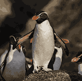
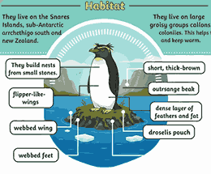
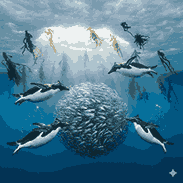

The Crested Penguins of the Snares Islands

Snares penguins are a small species of crested penguins known for their bright yellow crest feathers. They are named after the Snares Islands, where most of the population lives.

Snares penguins mainly live on the Snares Islands near New Zealand. They prefer rocky coastal areas and dense vegetation for nesting.

Snares penguins mainly eat krill, fish, and squid. They are strong swimmers and spend most of their life hunting in the ocean.